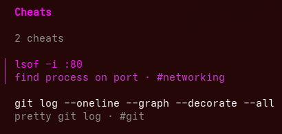

Cheatcom
A small personal CLI interactive cheatsheet in Go.

Overview
Problem statement
You run that Docker command every few weeks. You know roughly what it does.
But the flags? Gone. So you open a new terminal tab, type
history | grep docker, scroll through fifty unrelated entries,
and eventually give up and Google it again.
That moment happens to me constantly. After the fifth time searching for the
same gst-launch-1.0 ... invocation, I decided to build something that
actually solves the problem rather than work around it forever.
Why the existing tools do not cut it
I looked at what I was already using and why none of it was satisfying:
-
history | grep. This sorts by when you last typed something, not by what it means. If you have not run the command recently, it is buried. And if you use multiple machines or sessions, the history is fragmented. - Notes apps and Notion. They require a full context switch. Open the app, search for the page, find the command, copy it back to your terminal. That is like five steps for something that should take one.
- tldr and man. These are excellent for learning a tool for the first time. They are not useful for recalling your own personal invocations, the exact flag combination you settled on after trial and error, or the command that works in your specific environment.
The gap requires something personal, searchable, and instantly actionable. Which inspired me to try my hand building an custom CLI app, Cheatcom.
What cheatcom does
The workflow is simple. When you figure out a command worth keeping, you save it:
$ chc add "lsof -i :80" -d "find process on port" -t networking
$ chc add "git log --oneline --graph --decorate --all" -d "pretty git log" -t git
When you need it back, you just type chc. A fuzzy-searchable list
opens in the terminal. You type a few letters of the description or command,
arrow down, and press Enter. The command is copied to your clipboard, ready to
paste. The whole interaction takes about two seconds.
The binary works the same on Windows, macOS, and Linux. Cheats are stored as plain YAML in your platform's config directory, so you can back them up, version control them, or sync them across machines with Dropbox.
Why Go
Before writing a single line, I spent time comparing languages. This was a deliberate research step, not a default choice.
- Python and shell scripts - Quick to write, but distributing a Python CLI cleanly means either assuming the right Python version and dependencies are already installed, or bundling a self-contained executable with something like PyInstaller. Neither option produces the clean, portable binary I wanted.
- JavaScript and Node.js - I know it well, but the CLI ecosystem felt overcomplicated for this scope. The toolchain overhead, bundling requirements, and startup latency all pointed away from it.
- Rust - Appealing for performance and its single-binary output. But the learning curve is steep, compile times are long during development, and the cognitive overhead felt out of proportion to the problem.
- Go - This hit the right balance. Readable syntax. Fast compilation. A single static binary with no runtime dependency. Strong standard library. And a CLI ecosystem that made the common problems easy without requiring complex abstractions.
Go also turned out to be a genuinely well-designed language to work in day-to-day. The well designed simplicity creates clarity. There are very few ways to do the same thing, which makes code easy to read and maintain. Compared to the JavaScript projects I have worked on, Go felt reassuringly calm.
Learning from others
Given my limited Go experience at the time, I did not want to guess at what idiomatic Go CLI code looked like. So before writing much, I read through two production-quality open source CLI tools like jira-cli lazygit to study how experienced Go developers structure real projects. E.g. package layout, error handling conventions, how they wire Cobra commands together, and how they separate concerns between the CLI layer and business logic. That turned out to be more valuable than most tutorial.
A few things that landed directly in the code:
A seven-line entry point, for the entire main.go is:
package main
import "github.com/Eugene7997/cheatcom/internal/cmd"
func main() {
cmd.Execute()
}
All logic lives under internal/. The entry point is a stub, a pattern
borrowed directly from how jira-cli and lazygit structure their binaries.
One file per subcommand. Each command registers itself via
init(), so root.go never grows into a sprawling switch
statement. Here is rm.go in full:
var rmCmd = &cobra.Command{
Use: "rm <id>",
Short: "Remove a cheat by ID",
Args: cobra.ExactArgs(1),
RunE: runRm,
SilenceUsage: true,
}
func init() { rootCmd.AddCommand(rmCmd) }
The TUI never touches the store. The interactive list returns a
plain Result struct to the caller. The cmd layer decides
what to do with it i.e. copy, run, or print. This decoupling makes the TUI easy to
reason about and keeps side effects out of presentation code.
type Result struct {
Cheat store.Cheat
Action action.Action
Cancelled bool
}The ecosystem: Cobra, Viper, and Bubble Tea
Three libraries did most of the heavy lifting:
Cobra handles the subcommand structure and flag parsing. Writing
chc add, chc list, chc rm all drops into
place with almost no boilerplate. Cobra's design matches how CLI tools actually
grow: you add commands one at a time and they compose naturally.
Viper manages configuration and YAML persistence. It reads the
cheats file, deserializes the data, and provides the config values throughout the
app. For writes I skipped Viper's built-in helpers entirely since they are not
crash-safe. Instead I wrote persistence manually using an atomic write pattern:
serialize to a temp file, sync to disk, then rename into place. On Linux and macOS,
os.Rename is guaranteed atomic by POSIX. On Windows, it is effectively
atomic when both files are on the same volume, which the code ensures by creating
the temp file in the same directory as the destination:
// Write to a temp file in the same directory, then rename.
// os.Rename is atomic on most filesystems, so the file is
// never in a half-written state.
func (s *Store) Save() error {
data, _ := yaml.Marshal(fileFormat{Version: 1, Cheats: s.cheats})
tmp, _ := os.CreateTemp(dir, "cheats-*.yaml.tmp")
tmp.Write(data)
tmp.Sync()
tmp.Close()
return os.Rename(tmp.Name(), s.path)
}Bubble Tea (from Charmbracelet) powers the interactive TUI. It uses an Elm-style architecture: a model holds state, an update function handles input events, and a view function renders the current state as a string. Writing the fuzzy list and the edit form in Bubble Tea was surprisingly ergonomic. The framework handles terminal resize, key events, and rendering in a clean, testable model.
Shipping it: GoReleaser and semantic versioning
Once the app was ready, I began to see how I could ship it.
GoReleaser solved the multi-platform build problem neatly. With one config file, it builds binaries for Windows, macOS, and Linux across x86_64, arm64, and i386. Eight combinations in total. It creates archives, and publishes a GitHub release. The archives section is small enough to read in thirty seconds:
builds:
- main: ./cmd/cheatcom
binary: chc
goos: [linux, windows, darwin]
goarch: [arm64, amd64, "386"]
archives:
- formats: [tar.gz]
name_template: >-
{{ .ProjectName }}_
{{- title .Os }}_
{{- if eq .Arch "amd64" }}x86_64
{{- else if eq .Arch "386" }}i386
{{- else }}{{ .Arch }}{{ end }}
format_overrides:
- goos: windows
formats: [zip]
nfpms:
- formats: [deb]I also learned about proper semantic versioning during this project, semver.org . The convention is MAJOR.MINOR.PATCH: bump PATCH for bug fixes, MINOR for new features that are backwards compatible, and MAJOR for breaking changes. Following it matters even on a solo project because it communicates intent to anyone installing or automating updates.
However, there were two distribution problems I did not fully solve:
- Windows executable signing. To avoid Windows SmartScreen warnings when users download the binary, you need a code-signing certificate issued by Microsoft. These cost roughly $200 to $400 per year. For a free open source tool, that is not a reasonable expense, so the binary ships unsigned. Users see a SmartScreen prompt on first run.
-
apt repository. GoReleaser can produce a
.debpackage, which it does. But getting a package into a properaptrepository requires hosting a signed package repository and going through a non-trivial setup process.
What I took away
Go is genuinely well-suited to this category of tool i.e. command-line utilities that need to be small, fast, portable, and maintainable. The language's simplicity is what I love about it most. It is what makes the code readable six months later.
The ecosystem around CLI development in Go is mature and thoughtfully designed. Cobra, Viper, and Bubble Tea each solve their slice of the problem well.
Writing the code is just one half of the story. Distribution is the other. Getting it to users safely, reliably, on three operating systems is probably the tip of the iceberg of lot of the real engineering decisions
Conclusion
Working on this project has been fun, and it has made me want to build more CLI tools in the future.
cheatcom is open source. If you spend time at a terminal and keep Googling the same commands. give it a try